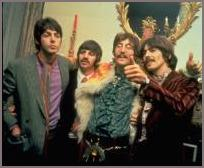

The rise and fall of the experimental style of the Beatles |
|||
| Contents | |||
| by Tuomas Eerola | |||
 Nowadays it has become common practice to identify the musical career of the Beatles with the development of a musical style. Taking the Sgt. Pepper's album of June 1967 as the peak of the Beatles' musical experiments, many books on this subject easily speak of a "rise" and "fall" of the Beatles' experimental style. In this essay Tuomas Eerola discloses his research into the adequacy of these concepts. |
|||
|
|
|||
| 1. Introduction. It is a common expression to say that a style is born, reaches its peak or maturity and finally becomes obsolete and dies. A good example of this "rise and fall" metaphor is the way in which the music and the career of the Beatles frequently are summarized. By presenting a breakdown of stylistic features of the Beatles' songs and their chronological distribution, this metaphor is demonstrated to be vitally connected to the concept of style itself. | |||
| 2. Theoretical foundation. The history of music and style periods within it are frequently described using the terms rise and fall. Terms like these presuppose other concepts like style, periods and life span, containing complicated and often contradictory notions about human behavior. Building on Gjerdingen's model of the "normative life span" of style we will clarify how these key concepts are used in this essay. | |||
| 3. Methodology and materials. To research the adequacy of the concept of style, the recording career of the Beatles was delineated into periods and each period was characterized by significant stylistic features. The resulting statistical distribution was compared to the model of the normative life span of style. Next, the outcomes were related to the concrete level by using the concept of prototype, revealing those songs that fulfilled the criteria for as many features as possible belonging to the experimental period. | |||
| 4. Results. The Beatles implemented their novel ideas progressively from the start of their recording career, but the stylistic turning point is commonly considered to be "Yesterday" on the Help! album and more perceptibly the songs on the Rubber Soul album. The experimental style peaks at the Sgt. Pepper's album and subsequently is falling down. This pattern is checked by confronting the statistical population curves of the individual features with Gjerdingen's model of the "normative life span" of style, a statistical analysis of the lyrics, and the song writers' own point of view. Next our analysis identifies the ten most prototypical songs. | |||
| 5. Summary and discussion. The hypothesis of the normative life span of style, based on Gjerdingen's study, was strongly supported by the results from the experimental period of the Beatles. The rise and fall of the Beatles' experimental style was found to be more than a metaphor. The stylistic features of the Beatles' experimental style and their statistical distribution exhibited curves highly similar to the normative life span. | |||
| References | |||
| Originally this essay was published as: Eerola, Tuomas (1998), "The rise and fall of the experimental style of the Beatles." In: Yrjö Heinonen, Tuomas Eerola, Jouni Koskimäki, Terhi Nurmesjärvi, and John Richardson (Eds.), Beatlesstudies 1. Songwriting, recording, and style change. Jyväskylä: University of Jyväskylä (Department of Music, Research Reports 19), 1998, 33-60. Like the other volumes of the Beatlestudies series the full book can be ordered at: Bookstore Kampus Kirja, Kauppakatu 9, 40100 Jyväskylä, Finland (e-mail: kirjamyynti@kampusdata.fi) | |||
| 2000 © Soundscapes | |||